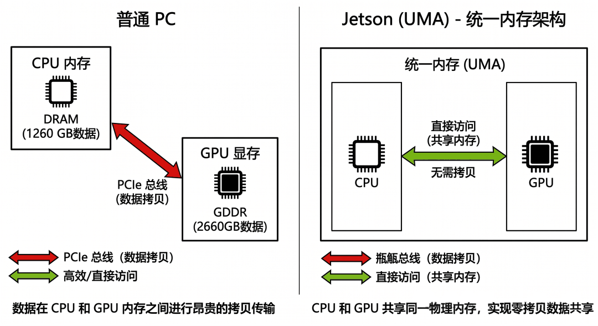
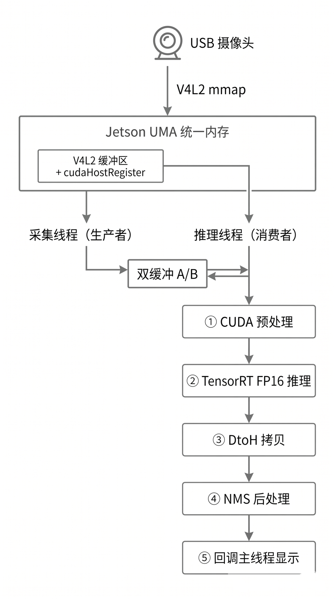
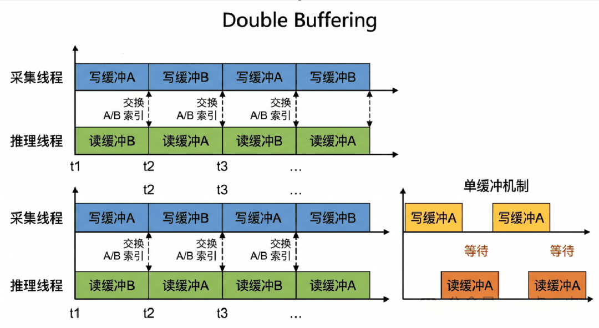

YOLO11 + TensorRT FP16 + V4L2 零拷贝 + 双缓冲流水线，榨干 Jetson Orin Nano Super 的每一帧性能
第一章：前言——为什么你的 Jetson 跑 YOLO 只有 5FPS？
如果你刚拿到一块 Jetson，插上 USB 摄像头，然后兴冲冲地跑了一段 Python 代码：
import cv2
from ultralytics import YOLO
model = YOLO("yolo11n.pt")
cap = cv2.VideoCapture(0)
while True:
ret, frame = cap.read()
results = model(frame)
annotated = results[0].plot()
cv2.imshow("YOLO", annotated)
if cv2.waitKey(1) == 27:
break然后你看到左上角的 FPS 数字——5。
你可能会想：是不是模型太大了？换个更小的？换成 yolo11n 还是 5FPS。是不是 Jetson 太弱了？不对啊，官方说有 40 TOPS 算力……
问题不在模型大小，也不在 Jetson 算力不够。问题在于你的数据根本没有高效地送进 GPU。
1.1 性能瓶颈到底在哪里？
我们来拆解一下上面那段代码每一帧都在干什么：
cap.read()
└─ V4L2 驱动把摄像头数据复制到 CPU 内存 ← 数据拷贝 #1
└─ OpenCV 把 YUYV 转成 BGR（CPU 上做） ← CPU 格式转换
└─ 返回一个 numpy array（BGR, HWC, uint8）
model(frame)
└─ Ultralytics 把 numpy array 转成 torch tensor ← 数据拷贝 #2
└─ 归一化 / 255.0（CPU 上做） ← CPU 计算
└─ HWC → NCHW layout 转换（CPU 上做） ← CPU 计算
└─ 把 tensor 从 CPU 搬到 GPU ← 数据拷贝 #3（最慢！）
└─ PyTorch 推理（GPU）
└─ 把结果从 GPU 搬回 CPU ← 数据拷贝 #4
└─ Python NMS 后处理 ← Python 慢数一数，4 次数据拷贝，其中 CPU→GPU 这一步在 Jetson 上尤其慢。而且整个流程是串行的——采集完才能推理，推理完才能采集下一帧。
更要命的是，Python 本身的解释器开销、PyTorch 的动态图开销，都在一帧一帧地累积。
1.2 Jetson 的杀手锏：统一内存（UMA）
Jetson 和普通 PC 有一个本质区别：CPU 和 GPU 共享同一块物理内存，这叫做统一内存架构（Unified Memory Architecture，UMA）。
在普通 PC 上，CPU 内存和 GPU 显存是物理隔离的，数据必须通过 PCIe 总线搬运，这个拷贝是真实存在的开销。
但在 Jetson 上，CPU 看到的地址和 GPU 看到的地址，指向的是同一块物理内存。理论上，摄像头数据写入 CPU 内存之后，GPU 可以直接读，根本不需要拷贝。
这就是本文所有优化的核心出发点。
1.3 本文要做什么
本文会带你从零搭建一套完整的 C++ 推理流水线，利用 Jetson 的 UMA 特性，把每一个不必要的数据拷贝都干掉，最终实现：
| 阶段 | 耗时 |
|---|---|
| CUDA 预处理（YUYV → NCHW） | ~1 ms |
| TensorRT FP16 推理 | ~12 ms |
| NMS 后处理 | < 1 ms |
| 端到端帧率 | ~27.5 FPS（摄像头采集硬件极限） |
说明：我所使用的 USB 摄像头虽然标称 30FPS，但是实测出来，采集帧率为 27.5FPS。
用到的技术栈：
- YOLO11n：Ultralytics 最新轻量检测模型
- TensorRT FP16：NVIDIA 推理加速框架，利用 Tensor Core 做半精度推理
- V4L2 mmap + cudaHostRegister：摄像头数据零拷贝直达 GPU
- 双缓冲流水线：采集线程和推理线程真正并行
- CUDA 预处理 kernel：所有图像变换在 GPU 上一步完成
第二章：硬件和软件环境介绍
在开始写代码之前，先搞清楚我们的”战场”——Jetson Orin Nano Super 到底是一块什么样的板子，以及为什么它特别适合做边缘推理。
2.1 Jetson Orin Nano Super 是什么？
Jetson 是 NVIDIA 专门为边缘 AI 设计的嵌入式计算平台。简单理解：它是一块”带 GPU 的树莓派”，但 GPU 是真正的 NVIDIA GPU，可以跑 CUDA、TensorRT，和数据中心的 A100 是同一个软件生态。
Jetson Orin Nano Super 的关键参数：
| 项目 | 规格 |
|---|---|
| SoC | NVIDIA Jetson Orin Nano Super |
| CPU | 6 核 Arm Cortex-A78AE |
| GPU | 1024 CUDA 核心，Ampere 架构（SM 8.7） |
| AI 算力 | 67 TOPS（INT8） |
| 内存 | 8GB LPDDR5，CPU/GPU 共享内存架构统一内存（UMA） |
| 功耗 | 7W / 25W 可配置 |
最关键的一行是”CPU/GPU 共享”——这就是 UMA，也是本文所有优化的物理基础。
2.2 UMA 统一内存架构——Jetson 的核心优势
这是理解本文所有优化的最重要概念，值得多花一点时间解释清楚。
普通 PC 的内存架构：
CPU ←──── PCIe 总线 ────→ GPU
│ │
CPU 内存（DDR） GPU 显存（GDDR）
（独立物理内存） （独立物理内存）在普通 PC 上，CPU 内存和 GPU 显存是两块完全独立的物理内存。数据从 CPU 传到 GPU，必须经过 PCIe 总线，这个传输是有实际时间开销的（通常几毫秒到几十毫秒，取决于数据量）。
Jetson 的 UMA 架构：
┌─────────────────────────────┐
│ 统一物理内存（LPDDR5） │
│ CPU 和 GPU 共享同一块内存 │
└──────────┬──────────────────┘
│
┌──────────┴──────────┐
│ │
CPU GPU
（看到同一块物理地址） （看到同一块物理地址）在 Jetson 上，CPU 和 GPU 访问的是同一块物理内存。CPU 写入的数据，GPU 可以直接读，不需要任何拷贝。
这意味着：摄像头数据通过 V4L2 驱动写入内存后，GPU 可以直接读取，零拷贝。

2.3 软件环境：JetPack 6.x
JetPack 是 NVIDIA 为 Jetson 提供的完整软件开发套件，一次安装包含所有需要的组件：
| 组件 | 版本 | 用途 |
|---|---|---|
| Ubuntu | 22.04 | 操作系统 |
| CUDA | 12.x | GPU 编程基础 |
| cuDNN | 9.x | 深度学习算子库 |
| TensorRT | 10.x | 推理加速框架 |
| OpenCV | 4.x | 图像处理（含 CUDA 支持） |
| V4L2 | 内核自带 | Linux 摄像头驱动框架 |
安装 JetPack 后，这些组件都已经预装好，不需要手动编译。这是 Jetson 相比普通 Linux 板子的一大优势。
查看当前 JetPack 版本：
cat /etc/nv_tegra_release
# 或者
dpkg -l | grep nvidia-jetpack查看 CUDA 版本：
nvcc --version查看 TensorRT 版本：
dpkg -l | grep tensorrt2.4 摄像头：V4L2 和 YUYV 格式
本项目使用普通 USB 摄像头，通过 Linux 标准的 V4L2（Video4Linux2）驱动框架采集图像。
插上摄像头后，可以用以下命令查看设备信息：
# 查看摄像头设备
ls /dev/video*
# 查看摄像头支持的格式和分辨率
v4l2-ctl --device=/dev/video0 --list-formats-ext典型输出：
ioctl: VIDIOC_ENUM_FMT
Type: Video Capture
[0]: 'YUYV' (YUYV 4:2:2)
Size: Discrete 640x480
Interval: Discrete 0.033s (30.000 fps)
Size: Discrete 1280x720
Interval: Discrete 0.100s (10.000 fps)这里有个重要信息：640×480 才能跑到 30FPS，1280×720 只有 10FPS。这是 USB 带宽限制，不是 Jetson 的问题。所以本项目选择 640×480 @ 30FPS。
YUYV 格式是什么？
YUYV（也叫 YUY2）是一种 YUV 4:2:2 格式，每两个像素共享一对 UV 色度值：
像素排列：Y0 U0 Y1 V0 | Y2 U2 Y3 V2 | ...
每像素占用：2 字节（平均）
640×480 一帧大小：640 × 480 × 2 = 614,400 字节 ≈ 600KB相比 RGB（每像素 3 字节），YUYV 节省了 1/3 的带宽，这也是 USB 摄像头默认用 YUYV 的原因。
但 YOLO 模型需要 RGB 输入，所以需要做格式转换——这个转换我们会放到 GPU 上做，后面第六章详细讲。
2.5 本项目的依赖清单
# 系统依赖（JetPack 6.x 已预装）
# - CUDA 12.x
# - TensorRT 10.x
# - OpenCV 4.x（含 CUDA 支持）
# - V4L2（Linux 内核自带）
# 编译工具
sudo apt install cmake build-essential
# Python 依赖（仅用于模型转换，推理不需要 Python）
pip install ultralytics tensorrt注意：推理程序是纯 C++ 的，运行时不依赖 Python 和 PyTorch。Python 只在模型转换阶段用一次。
下一章：整体架构设计，以及为什么要用流水线思维来组织代码。
第三章：整体架构设计——流水线思维
搞清楚硬件之后，我们来设计整个系统的架构。这一章是全文的”地图”，后面每一章都是在实现这张地图上的某个模块。
3.1 最朴素的串行方案——问题在哪里？
很多人第一次用 C++ 写推理，会写出这样的串行循环：
while (true) {
1. 采集一帧（V4L2） ← 等待摄像头，~33ms
2. CUDA 预处理 ← GPU，~1ms
3. TensorRT 推理 ← GPU，~12ms
4. NMS 后处理 ← CPU，<1ms
5. 显示结果 ← CPU，~2ms
}每帧总耗时：33 + 1 + 12 + 1 + 2 ≈ 49ms，也就是约 20FPS。
问题很明显：采集和推理是串行的。推理在跑的时候，摄像头在空转；采集在等的时候，GPU 在闲置。两个本来可以并行的操作，被强行串行了。
3.2 流水线方案——让采集和推理真正并行
解决方案是经典的生产者-消费者双缓冲流水线：
[采集线程（生产者）] [推理线程（消费者）]
V4L2 captureFrame() → 双缓冲区 A/B
~33ms/帧 │
├─ CUDA 预处理 ~1ms
├─ TRT 推理 ~12ms
├─ DtoH 拷贝 ~0.5ms
├─ NMS 后处理 <1ms
└─ 回调主线程两个线程同时跑：
- 采集线程一直在等摄像头出帧，出来就写入空闲缓冲区
- 推理线程一直在消费最新帧，推理完就取下一帧
稳态下，推理耗时（~14ms）远小于采集周期（33ms），所以每一帧摄像头出来的帧都能被及时处理，端到端帧率接近摄像头的 30FPS 上限。
3.3 完整系统架构图

USB 摄像头（640×480 @ 30FPS，YUYV 格式）
│
│ V4L2 mmap（内核驱动写入 UMA 物理内存）
▼
┌─────────────────────────────────────────────────────┐
│ 统一物理内存（UMA） │
│ ┌──────────────────────────────────────────────┐ │
│ │ V4L2 缓冲区（mmap） │ │
│ │ cudaHostRegister → 获得 GPU 设备指针 │ │
│ └──────────────────────────────────────────────┘ │
└─────────────────────────────────────────────────────┘
│
│ dev_ptr（GPU 直接读，零拷贝）
▼
[采集线程] ──双缓冲 A/B──► [推理线程]
│
├─① CUDA 预处理 kernel
│ YUYV → RGB
│ Letterbox 缩放（640×480 → 640×640）
│ HWC → NCHW layout
│ 归一化 / 255.0
│ 输出：float32 [1,3,640,640]
│
├─② TensorRT FP16 推理（异步 Stream）
│ YOLO11n engine
│ 输出：float32 [1, 8, 8400]
│
├─③ cudaMemcpyAsync DtoH
│ 推理结果搬回 CPU（固定内存）
│
├─④ cudaStreamSynchronize
│ 等待 GPU 全部完成
│
├─⑤ NMS 后处理（CPU）
│ 置信度过滤 + IoU 去重
│ Letterbox 逆变换坐标还原
│
└─⑥ 回调主线程
memcpy YUYV 数据
主线程：cvtColor + 绘框 + imshow3.4 五个核心模块
整个系统由五个模块组成，每个模块对应一个源文件：
| 模块 | 文件 | 职责 |
|---|---|---|
| V4L2Manager | v4l2_manager.cpp | 摄像头采集 + mmap + cudaHostRegister 零拷贝 |
| CudaPreprocessor | cuda_preprocessor.cu | YUYV→NCHW RGB float32 + Letterbox，GPU kernel |
| TrtEngine | trt_engine.cpp | TensorRT 引擎加载 + 异步推理 |
| NmsProcessor | nms_processor.cpp | 置信度过滤 + NMS + 坐标逆变换 |
| DoubleBufPipeline | pipeline.cpp | 双缓冲流水线，串联以上四个模块 |
主程序 main.cpp 只负责配置参数、接收回调、做 OpenCV 显示，不参与推理逻辑。
3.5 数据流中的内存类型
理解这套系统，还需要搞清楚数据在不同阶段用的是什么类型的内存：
| 阶段 | 内存类型 | 说明 |
|---|---|---|
| V4L2 缓冲区 | CPU mmap（固定内存） | 内核驱动分配，cudaHostRegister 后 GPU 可直接访问 |
| CUDA 预处理输出 | GPU 设备内存 | cudaMalloc 分配，float32 [1,3,640,640] |
| TRT 推理输出 | GPU 设备内存 | cudaMalloc 分配，float32 [1,8,8400] |
| NMS 输入 | CPU 固定内存（Pinned） | cudaMallocHost 分配，异步 DtoH 拷贝目标 |
| 显示缓冲 | CPU 普通内存 | std::vector |
其中最关键的是第一行：V4L2 缓冲区通过 cudaHostRegister 变成”固定内存”，GPU 可以通过设备指针直接读取，这就是零拷贝的实现方式。
第四章：模型准备——YOLO11n 训练与 TensorRT FP16 转换
推理流水线搭好之前，先把模型准备好。这一章讲两件事：用 Ultralytics 训练 YOLO11n，以及把训练好的 .pt 文件转换成 TensorRT .engine 文件。
4.1 为什么选 YOLO11n？
YOLO 系列有很多变体，从 n（nano）到 x（extra large）。在 Jetson 这种边缘设备上，模型大小和推理速度的平衡非常重要。
| 模型 | 参数量 | COCO mAP | Jetson 推理耗时（约） |
|---|---|---|---|
| YOLO11n | 2.6M | 39.5 | ~12ms |
| YOLO11s | 9.4M | 47.0 | ~25ms |
| YOLO11m | 20.1M | 51.5 | ~50ms |
YOLO11n 在参数量极小的情况下，仍然有不错的精度，推理耗时约 12ms，满足实时要求。对于边缘部署场景，n 版本是首选。
4.2 训练 YOLO11n
本项目训练了 4 个自定义类别：book（书）、airpods（耳机）、baby（婴儿）、makeup（化妆品）。
训练命令非常简单，Ultralytics 封装得很好：
from ultralytics import YOLO
model = YOLO("yolo11n.pt") # 加载预训练权重
model.train(
data="dataset/data.yaml", # 数据集配置文件
epochs=100, # 训练轮数
imgsz=640, # 输入尺寸
batch=32, # 批大小
device=0, # GPU 设备
optimizer="auto", # 自动选择优化器（AdamW）
pretrained=True, # 使用预训练权重（迁移学习）
mosaic=1.0, # Mosaic 数据增强
mixup=0.1, # MixUp 数据增强
degrees=15, # 随机旋转 ±15°
fliplr=0.5, # 水平翻转概率
hsv_s=0.7, # 饱和度扰动
hsv_v=0.4, # 亮度扰动
)data.yaml 的格式如下：
path: /path/to/dataset
train: images/train
val: images/val
nc: 4 # 类别数
names:
0: book
1: airpods
2: baby
3: makeup训练完成后，权重保存在 runs/detect/train3/weights/best.pt。
几个训练技巧：
pretrained=True：必须开，从 COCO 预训练权重微调，收敛快得多mosaic=1.0：Mosaic 增强把 4 张图拼在一起训练，对小目标效果很好close_mosaic=10：最后 10 个 epoch 关闭 Mosaic，让模型稳定收敛imgsz=640：和推理时保持一致，不要训练用 640 推理用 416
4.3 为什么要转 TensorRT？
训练完拿到的 .pt 是 PyTorch 格式，直接在 Jetson 上推理的问题：
- PyTorch 本身很重：加载 PyTorch runtime 需要几百 MB 内存，启动慢
- 没有硬件级优化：PyTorch 不会针对 Jetson 的 Ampere GPU 做特化优化
- FP32 精度浪费：Ampere GPU 有 Tensor Core，专门为 FP16 加速设计，PyTorch 默认跑 FP32
TensorRT 做的事情：
- 图优化：合并算子（如 Conv+BN+ReLU 融合成一个算子），减少 kernel 启动开销
- 层融合：把多个小操作合并成一个大操作，减少显存读写
- 精度校准：FP32 → FP16，计算量减半，Tensor Core 全速运行
- 硬件特化：针对具体 GPU 架构（SM 8.7）选择最优的 kernel 实现
FP16 精度影响大吗？ 对于目标检测来说，FP16 和 FP32 的精度差异几乎可以忽略（mAP 差 < 0.5%），但速度提升非常明显。Ampere GPU 的 FP16 Tensor Core 算力是 FP32 的 2 倍。
4.4 转换脚本：pt → ONNX → TensorRT engine
转换分两步：先导出 ONNX，再编译成 TensorRT engine。
完整脚本 scripts/export_engine.py：
#!/usr/bin/env python3
"""
YOLO11n pt → ONNX → TensorRT FP16 engine 转换脚本
用法:
python3 scripts/export_engine.py \
--weights yolo/runs/detect/train3/weights/best.pt \
--output models/best.engine \
--imgsz 640
"""
import argparse, os, sys
from pathlib import Path
def export_onnx(weights: str, output_onnx: str, imgsz: int) -> None:
from ultralytics import YOLO
model = YOLO(weights)
model.export(
format="onnx",
imgsz=imgsz,
opset=11, # TensorRT 兼容的 opset 版本
simplify=True, # onnx-simplifier 精简计算图
dynamic=False, # 固定 batch size，推理更快
)
src = Path(weights).with_suffix(".onnx")
if str(src) != output_onnx:
import shutil
shutil.move(str(src), output_onnx)
print(f"[export] ONNX saved → {output_onnx}")
def build_engine(onnx_path: str, engine_path: str, fp16: bool = True) -> None:
import tensorrt as trt
logger = trt.Logger(trt.Logger.INFO)
builder = trt.Builder(logger)
network = builder.create_network(
1 << int(trt.NetworkDefinitionCreationFlag.EXPLICIT_BATCH)
)
parser = trt.OnnxParser(network, logger)
with open(onnx_path, "rb") as f:
if not parser.parse(f.read()):
for i in range(parser.num_errors):
print(f"[TRT] parse error: {parser.get_error(i)}")
raise RuntimeError("ONNX parse failed")
config = builder.create_builder_config()
config.set_memory_pool_limit(trt.MemoryPoolType.WORKSPACE, 1 << 30) # 1 GB
if fp16 and builder.platform_has_fast_fp16:
config.set_flag(trt.BuilderFlag.FP16)
print("[build] FP16 enabled")
print("[build] Building TensorRT engine (may take a few minutes) ...")
serialized = builder.build_serialized_network(network, config)
with open(engine_path, "wb") as f:
f.write(serialized)
print(f"[build] Engine saved → {engine_path}")
def main():
parser = argparse.ArgumentParser()
parser.add_argument("--weights", default="yolo/runs/detect/train3/weights/best.pt")
parser.add_argument("--output", default="models/best.engine")
parser.add_argument("--imgsz", type=int, default=640)
args = parser.parse_args()
onnx_path = args.output.replace(".engine", ".onnx")
# Step1: pt → ONNX
if not os.path.exists(onnx_path):
export_onnx(args.weights, onnx_path, args.imgsz)
# Step2: ONNX → TRT engine
build_engine(onnx_path, args.output, fp16=True)
if __name__ == "__main__":
main()运行方式：
python3 scripts/export_engine.py \
--weights yolo/runs/detect/train3/weights/best.pt \
--output models/best.engine编译过程需要几分钟，耐心等待。完成后会看到：
[build] FP16 enabled
[build] Building TensorRT engine (may take a few minutes) ...
[build] Engine saved → models/best.engine
INPUT images shape=(1, 3, 640, 640) dtype=DataType.FLOAT
OUTPUT output0 shape=(1, 8, 8400) dtype=DataType.FLOAT4.5 重要：.engine 文件必须在目标机上生成
这是新手最常踩的坑。TensorRT 在编译 engine 时，会针对当前机器的具体 GPU 型号选择最优的 kernel 实现。生成的 .engine 文件是与硬件绑定的，在 A 机器上生成的 engine，不能直接复制到 B 机器上用（即使两台都是 Jetson）。
正确做法：
开发机（PC）：训练模型，得到 best.pt
↓ 复制 best.pt 到 Jetson
Jetson：运行 export_engine.py，生成 best.engine
↓ best.engine 只能在这台 Jetson 上使用错误做法：
PC 上生成 best.engine → 复制到 Jetson → 运行报错或精度异常 ✗4.6 理解输出 shape：[1, 8, 8400]
TensorRT engine 的输出是 [1, 8, 8400]，这个 shape 需要理解清楚，NMS 后处理要用到。
- 1：batch size
- 8：每个检测框的属性数 = 4（cx, cy, w, h）+ 4（类别数）
- 8400：候选框数量（YOLO11n 在 640×640 输入下的 anchor-free 候选框总数）
每个候选框的数据格式：
- 索引 0：cx（中心点 x，网络坐标 0~640）
- 索引 1：cy（中心点 y，网络坐标 0~640）
- 索引 2：w（框宽，网络坐标）
- 索引 3：h（框高，网络坐标）
- 索引 4：class_0 得分（book）
- 索引 5：class_1 得分（airpods）
- 索引 6：class_2 得分（baby）
- 索引 7：class_3 得分（makeup）
8400 个候选框绝大多数置信度很低，NMS 会把它们过滤掉，最终留下几个真正的检测结果。
第五章：V4L2 零拷贝——摄像头数据直达 GPU
这一章是本文最核心的优化之一。我们要做到：摄像头数据从内核写入内存的那一刻起，GPU 就可以直接读取，中间没有任何 CPU 参与的数据拷贝。
5.1 普通方式 vs 零拷贝方式
先看普通的 OpenCV 读摄像头方式：
摄像头（硬件）
│ USB 传输
▼
内核 V4L2 缓冲区（内核空间）
│ 内核 → 用户空间拷贝（read() 系统调用）
▼
用户空间 CPU 内存（cv::Mat data）
│ cudaMemcpy（CPU → GPU）
▼
GPU 设备内存
│ CUDA kernel 处理
▼
推理输入共 2 次数据拷贝：内核→用户空间、CPU→GPU。
本项目的零拷贝方式：
摄像头（硬件）
│ USB 传输
▼
内核 V4L2 缓冲区（mmap，直接映射到 UMA 物理内存）
│ cudaHostRegister（告诉 CUDA 这块内存可以被 GPU 访问）
│ cudaHostGetDevicePointer（获取 GPU 视角的指针）
▼
GPU 直接读取（零拷贝！）
│ CUDA kernel 处理
▼
推理输入0 次额外拷贝：得益于 Jetson UMA，摄像头数据写入的那块物理内存，GPU 可以直接读。
AI 画图提示词（零拷贝对比图）：绘制两张并排的数据流向图，标题分别为”普通方式（2次拷贝）”和”零拷贝方式（0次拷贝）”。左图：从上到下依次排列”摄像头”→”内核缓冲区”→”用户空间内存”→”GPU 显存”，每个箭头旁边标注拷贝操作名称，用红色虚线框标出两次拷贝操作，表示性能瓶颈。右图：从上到下依次排列”摄像头”→”V4L2 mmap 缓冲区（UMA 物理内存）”→”GPU 直接读取”，箭头全部为绿色实线，中间没有拷贝操作，用绿色标注”零拷贝”。整体风格为技术架构图，深色背景。
5.2 V4L2 mmap 工作原理
V4L2 支持三种数据获取方式：
- read()：每次系统调用把帧数据从内核拷贝到用户空间（最慢）
- USERPTR：用户提供内存，内核直接写入（需要对齐）
- mmap：把内核缓冲区直接映射到用户空间虚拟地址（最快）
本项目用 mmap 方式。用户空间拿到的是一个虚拟地址，它映射到内核缓冲区的物理内存——在 Jetson UMA 架构下，这块物理内存同时也是 GPU 可以访问的内存。
5.3 核心代码详解
第一步：打开设备并设置格式
// v4l2_manager.cpp
bool V4L2Manager::open(const std::string& device, int width, int height, int fps, int n_bufs){
// 以非阻塞模式打开设备
fd_ = ::open(device.c_str(), O_RDWR | O_NONBLOCK);
// 设置采集格式：YUYV，640×480
v4l2_format fmt{};
fmt.type = V4L2_BUF_TYPE_VIDEO_CAPTURE;
fmt.fmt.pix.width = width;
fmt.fmt.pix.height = height;
fmt.fmt.pix.pixelformat = V4L2_PIX_FMT_YUYV; // YUYV 格式
fmt.fmt.pix.field = V4L2_FIELD_NONE;
xioctl(fd_, VIDIOC_S_FMT, &fmt);
// 设置帧率
v4l2_streamparm parm{};
parm.type = V4L2_BUF_TYPE_VIDEO_CAPTURE;
parm.parm.capture.timeperframe.numerator = 1;
parm.parm.capture.timeperframe.denominator = fps; // 30
xioctl(fd_, VIDIOC_S_PARM, &parm);
...
}第二步：申请缓冲区并 mmap
bool V4L2Manager::requestBuffers(int n_bufs){
v4l2_requestbuffers req{};
req.count = n_bufs; // 申请 4 个缓冲区
req.type = V4L2_BUF_TYPE_VIDEO_CAPTURE;
req.memory = V4L2_MEMORY_MMAP; // 使用 mmap 方式
xioctl(fd_, VIDIOC_REQBUFS, &req);
...
}
bool V4L2Manager::mmapBuffers(){
for (size_t i = 0; i < buffers_.size(); ++i) {
v4l2_buffer buf{};
buf.type = V4L2_BUF_TYPE_VIDEO_CAPTURE;
buf.memory = V4L2_MEMORY_MMAP;
buf.index = i;
xioctl(fd_, VIDIOC_QUERYBUF, &buf); // 查询缓冲区信息
// mmap：把内核缓冲区映射到用户空间
// buffers_[i].ptr 是 CPU 可访问的虚拟地址
buffers_[i].ptr = mmap(nullptr, buf.length,
PROT_READ | PROT_WRITE,
MAP_SHARED, fd_, buf.m.offset);
}
...
}第三步：关键！cudaHostRegister 让 GPU 直接访问
bool V4L2Manager::registerCudaPinnedMemory(){
for (auto& b : buffers_) {
// 把 mmap 得到的 CPU 地址注册为 CUDA 固定内存
// 这样 GPU 就可以通过设备指针直接访问这块内存
cudaHostRegister(b.ptr, b.length, cudaHostRegisterDefault);
// 获取对应的 GPU 设备指针
// b.dev_ptr 是 GPU 视角下的地址，指向同一块物理内存
cudaHostGetDevicePointer(&b.dev_ptr, b.ptr, 0);
}
...
}这两行是整个零拷贝的关键：
cudaHostRegister：告诉 CUDA 驱动，这块内存是”固定内存”（不会被 OS 换页），GPU 可以通过 DMA 直接访问cudaHostGetDevicePointer：获取这块内存的 GPU 视角地址
在 Jetson UMA 架构下，b.ptr（CPU 地址）和 b.dev_ptr（GPU 地址）指向的是同一块物理内存，只是虚拟地址不同。
第四步：采集帧
bool V4L2Manager::captureFrame(FrameBuffer& out_frame){
// 用 select 等待摄像头数据就绪（非阻塞，最多等 2 秒）
fd_set fds;
FD_ZERO(&fds);
FD_SET(fd_, &fds);
timeval tv{2, 0};
select(fd_ + 1, &fds, nullptr, nullptr, &tv);
// DQBUF：从队列取出一帧（此时内核已把摄像头数据写入 mmap 内存）
v4l2_buffer buf{};
buf.type = V4L2_BUF_TYPE_VIDEO_CAPTURE;
buf.memory = V4L2_MEMORY_MMAP;
xioctl(fd_, VIDIOC_DQBUF, &buf);
// 返回帧信息：ptr（CPU 地址）和 dev_ptr（GPU 地址）都是同一块物理内存
out_frame = buffers_[buf.index];
out_frame.index = buf.index;
return true;
}第五步：用完归还缓冲区
bool V4L2Manager::releaseFrame(const FrameBuffer& frame){
v4l2_buffer buf{};
buf.type = V4L2_BUF_TYPE_VIDEO_CAPTURE;
buf.memory = V4L2_MEMORY_MMAP;
buf.index = frame.index;
// QBUF：把缓冲区还给内核，让摄像头可以继续写入新帧
xioctl(fd_, VIDIOC_QBUF, &buf);
return true;
}V4L2 的缓冲区是循环使用的：内核维护一个队列，DQBUF 取出一个（用户使用），QBUF 还回去（内核继续填充）。缓冲区不及时归还，摄像头就会停止写入新帧。
5.4 常见坑
- 坑 1：忘记 O_NONBLOCK。打开设备时必须加 O_NONBLOCK，否则 VIDIOC_DQBUF 会阻塞整个线程，影响流水线效率。用 select 来等待数据就绪，比直接阻塞更可控。
- 坑 2：缓冲区数量太少。VIDIOC_REQBUFS 申请的缓冲区数量建议 4 个。太少（< 2）驱动会报错；2 个勉强能用但容易帧率抖动；4 个是比较稳定的选择。
- 坑 3：cudaHostRegister 失败。如果 cudaHostRegister 返回 cudaErrorHostMemoryAlreadyRegistered，说明这块内存已经注册过了。在程序退出时要调用 cudaHostUnregister 做清理。
- 坑 4：YUYV 格式确认。不是所有摄像头都支持 YUYV。用 v4l2-ctl –list-formats-ext 确认，如果只支持 MJPEG，需要先解码再处理，会复杂很多。本项目只处理 YUYV。
下一章：CUDA 预处理——在 GPU 上一步完成 YUYV→RGB、Letterbox 缩放、格式转换、归一化。
第六章：CUDA 预处理——GPU 上一步完成所有图像变换
拿到摄像头的 YUYV 数据之后，在送入 TensorRT 推理之前，需要做一系列图像变换：
- YUYV → RGB 色彩空间转换
- 640×480 → 640×640 Letterbox 缩放
- HWC → NCHW 内存布局转换
- uint8 → float32，归一化 / 255.0
如果这些操作都在 CPU 上用 OpenCV 做，每帧大约需要 5~8ms，而且还要把结果从 CPU 搬到 GPU。
本项目把这四步合并成一个 CUDA kernel，在 GPU 上一次性完成，耗时约 1ms，并且输出直接就在 GPU 显存里，不需要任何 CPU→GPU 的拷贝。
6.1 为什么不用 OpenCV CUDA？
OpenCV 有 CUDA 模块（cv::cuda），也可以在 GPU 上做这些操作。但问题是：
- OpenCV CUDA 的每个操作（resize、cvtColor、normalize）都是独立的 kernel launch
- 每次 kernel launch 都有固定的调度开销（~10µs）
- 多个 kernel 之间还需要显存读写（一个 kernel 的输出是下一个的输入）
我们的自定义 kernel 把这四步融合成一个 kernel，数据在寄存器里流转，不落盘到显存，极大减少了内存带宽消耗。
6.2 Letterbox 缩放是什么？
YOLO 的输入要求是正方形（640×640），但摄像头输出是 640×480（4:3）。最简单的做法是直接 resize 成 640×640，但这会拉伸图像，改变目标的宽高比，影响检测精度。
Letterbox 的做法是：等比例缩放，然后用灰色填充边缘。
原始图像（640×480）
↓ 等比例缩放：640/640 = 1.0（宽不变），480→480（高不变）
但目标是 640×640，高度差 640-480=160
↓ 上下各填充 80 像素灰边（值=114）
640×640 Letterbox 结果具体参数：
scale = min(net_w/src_w, net_h/src_h) = min(640/640, 640/480) = 1.0
pad_x = (net_w - src_w * scale) / 2 = (640 - 640) / 2 = 0
pad_y = (net_h - src_h * scale) / 2 = (640 - 480) / 2 = 80NMS 后处理时，需要用这些参数做逆变换，把网络坐标系里的框还原到原始图像坐标。
AI 画图提示词（Letterbox 示意图）：绘制一张 Letterbox 缩放示意图。左侧显示一个 640×480 的矩形框，标注”原始图像 640×480”，框内有一个简单的示意场景（比如一本书）。中间用箭头标注”Letterbox 缩放”。右侧显示一个 640×640 的正方形框，框内顶部和底部各有一段灰色填充区域（标注”灰色填充 pad=80px”），中间是与左侧等比例的图像内容。右侧图的灰色填充区域用虚线框标出，并标注尺寸。整体风格简洁，白色背景，蓝色边框。
6.3 CUDA kernel 核心逻辑
CUDA kernel 的思路是：每个线程负责输出图像的一个像素。对于输出图像中的像素 (x, y)：
- 判断这个像素在不在图像有效区域（还是灰色填充区）
- 如果在有效区，计算它对应的原始图像坐标 (src_x, src_y)
- 从 YUYV 数据中读取 (src_x, src_y) 的 YUV 值
- 转换成 RGB
- 归一化并写入输出的 NCHW 内存
YUV → RGB 的转换公式（BT.601 标准）：
R = clamp(1.164 * (Y - 16) + 1.596 * (V - 128))
G = clamp(1.164 * (Y - 16) - 0.813 * (V - 128) - 0.391 * (U - 128))
B = clamp(1.164 * (Y - 16) + 2.018 * (U - 128))在代码中用整数乘法替代浮点，避免精度损失的同时提高性能：
// kernal/yuv_to_rgb_kernel.cu
static __device__ void __forceinline__ yuv2rgb(
int y, int u, int v, uint8_t& r, uint8_t& g, uint8_t& b
){
int iyval = 1220542 * max(0, y - 16);
r = u8cast((iyval + 1673527*(v - 128) + (1 << 19)) >> 20);
g = u8cast((iyval - 852492*(v - 128) - 409993*(u - 128) + (1 << 19)) >> 20);
b = u8cast((iyval + 2116026*(u - 128) + (1 << 19)) >> 20);
}YUYV 格式中，每 4 个字节存储 2 个像素（Y0 U Y1 V），读取某像素的 YUV 值：
// 从 YUYV 数据读取像素（x, y）的 YUV 值
// YUYV 布局：Y0 U0 Y1 V0 Y2 U2 Y3 V2 ...
// 每两个像素共用一对 UV
uchar4 yuv = *(uchar4*)((const uint8_t*)luma + y * stride + (x / 2) * 4);
// yuv.y = U, yuv.x = V（VYUY 格式下的偏移）
// 奇数像素用 yuv.y（Y），偶数像素用 yuv.w（Y）
if (x % 2 == 0)
yuv2rgb(yuv.y, yuv.z, yuv.x, r, g, b);
else
yuv2rgb(yuv.w, yuv.z, yuv.x, r, g, b);6.4 NCHW 内存布局
神经网络处理图像时，有两种常见的内存布局：
HWC（Height × Width × Channels）——OpenCV 默认格式：
内存顺序：R(0,0) G(0,0) B(0,0) R(0,1) G(0,1) B(0,1) ...
像素优先：同一个像素的 RGB 放在一起NCHW（Batch × Channels × Height × Width）——PyTorch/TensorRT 默认格式：
内存顺序：R(0,0) R(0,1) R(0,2) ... R(H,W) G(0,0) G(0,1) ... B(0,0) B(0,1) ...
通道优先：同一个通道的所有像素放在一起CUDA kernel 在写入输出时，直接按 NCHW 格式写，省掉了一次格式转换：
// NCHW_RGB 写入：R 通道、G 通道、B 通道分别存放
*(pdst + (((ib * 3 + 0) * height + y) * width + x)) = r; // R 通道
*(pdst + (((ib * 3 + 1) * height + y) * width + x)) = g; // G 通道
*(pdst + (((ib * 3 + 2) * height + y) * width + x)) = b; // B 通道6.5 kernel 启动配置
// 每个线程块 16×32 = 512 个线程
// 4x 版本：每个线程处理 4 个横向相邻像素，提高内存访问效率
dim3 dim_block(16, 32);
dim3 dim_grid(
((out_width + 3) / 4 + dim_block.x - 1) / dim_block.x,
(out_height + dim_block.y - 1) / dim_block.y,
1
);
convert_yuv_to_rgb_kernel_4x<<<dim_grid, dim_block, 0, stream>>>(...);使用 4x kernel（每线程处理 4 个像素）而非 1x kernel，可以更好地利用内存访问的局部性，减少 YUYV 数据的重复读取。
下一章：TensorRT 推理——如何加载 engine 并做异步推理。
第七章：TensorRT 推理——异步 CUDA Stream
这一章讲 TensorRT engine 的加载和推理。相比 PyTorch 的 model(input)，TensorRT 的 API 稍微底层一些，但理解了之后逻辑很清晰。
7.1 CUDA Stream 是什么？
在讲推理代码之前，先理解 CUDA Stream 这个概念，因为整个推理流水线都围绕它运转。
可以把 CUDA Stream 理解成 GPU 上的一条”任务队列”。向同一个 Stream 提交的操作，会按顺序执行；不同 Stream 之间的操作，可以并行执行。
Stream 0: [预处理 kernel] → [TRT 推理] → [DtoH 拷贝] → ...
Stream 1: [另一个任务] ...（可以与 Stream 0 并行）本项目只用一个 Stream，把预处理、推理、DtoH 拷贝串联在同一个队列里。这样 CPU 提交完任务就可以去干别的事（比如处理上一帧的显示），GPU 在后台异步执行。
创建 Stream：
cudaStream_t stream_;
cudaStreamCreate(&stream_);7.2 加载 TensorRT Engine
// src/trt_engine.cpp
bool TrtEngine::loadEngine(const std::string& engine_path){
// 第一步：把 .engine 文件读入内存
std::ifstream file(engine_path, std::ios::binary | std::ios::ate);
size_t size = file.tellg();
file.seekg(0, std::ios::beg);
std::vector<char> data(size);
file.read(data.data(), size);
file.close();
// 第二步：创建 TensorRT Runtime
runtime_ = nvinfer1::createInferRuntime(g_trt_logger);
// 第三步：反序列化（把二进制数据还原成 engine 对象）
// 这一步会把优化好的 kernel 代码加载到 GPU
engine_ = runtime_->deserializeCudaEngine(data.data(), size);
// 第四步：创建执行上下文（每次推理用这个对象）
context_ = engine_->createExecutionContext();
// 第五步：解析输入输出张量信息
int n_tensors = engine_->getNbIOTensors();
for (int i = 0; i < n_tensors; ++i) {
const char* name = engine_->getIOTensorName(i);
auto mode = engine_->getTensorIOMode(name);
if (mode == nvinfer1::TensorIOMode::kINPUT) {
input_name_ = name; // "images"
} else {
output_name_ = name; // "output0"
nvinfer1::Dims dims = engine_->getTensorShape(name);
output_channels_ = dims.d[1]; // 8
output_boxes_ = dims.d[2]; // 8400
}
}
// 第六步：为输出分配 GPU 显存
size_t out_bytes = 1ull * output_channels_ * output_boxes_ * sizeof(float);
cudaMalloc(&output_dev_, out_bytes);
...
}deserializeCudaEngine 这一步会把编译好的 GPU kernel 加载进来，通常需要 1~2 秒，但只在启动时执行一次。
7.3 异步推理
bool TrtEngine::infer(float* input_dev, cudaStream_t stream){
// TensorRT 10.x API：
// 设置输入张量地址（GPU 显存指针）
context_->setTensorAddress(input_name_.c_str(), input_dev);
// 设置输出张量地址（GPU 显存指针）
context_->setTensorAddress(output_name_.c_str(), output_dev_);
// 异步入队：把推理任务提交到 stream，立即返回，不等待 GPU 完成
context_->enqueueV3(stream);
return true;
}enqueueV3 是 TensorRT 10.x 的异步推理接口。调用后立即返回，推理任务在 GPU 后台执行。CPU 可以继续做其他事情（比如准备下一帧数据）。
实际等待 GPU 完成是在推理结果 DtoH 拷贝之后：
// pipeline.cpp 推理线程中
// ① CUDA 预处理（异步，提交到 stream）
float* input_dev = preprocessor_.process(cur_frame.dev_ptr, stream_);
// ② TRT 推理（异步，提交到 stream）
engine_.infer(input_dev, stream_);
// ③ 异步 DtoH 拷贝推理结果（异步，提交到 stream）
cudaMemcpyAsync(output_host_, engine_.outputDevice(),
output_bytes_, cudaMemcpyDeviceToHost, stream_);
// ④ 同步：等待 stream 里所有任务完成
cudaStreamSynchronize(stream_);
// 到这里，output_host_ 里已经有推理结果了这四步都在同一个 stream 里，GPU 会按顺序执行。cudaStreamSynchronize 之前，CPU 和 GPU 是并行的——CPU 已经提交完所有任务，GPU 在跑，CPU 可以拿去做别的（但本项目推理线程在这里就等了）。
7.4 为什么用 cudaMallocHost 分配输出缓冲？
// pipeline.cpp
cudaMallocHost(&output_host_, output_bytes_);cudaMallocHost 分配的是页锁定内存（Pinned Memory），又叫固定内存。
普通 malloc 分配的内存，OS 可能随时把它换到磁盘（分页）。cudaMemcpyAsync 要求目标内存不能被换页，否则异步拷贝会失败或变成同步操作。
cudaMallocHost 保证这块内存永远在物理内存里，cudaMemcpyAsync 可以正常异步工作。
另外，Pinned Memory 的 DtoH 传输速度比普通内存快，因为可以直接 DMA 传输，不需要 CPU 中转。
7.5 TensorRT 版本兼容性
TensorRT 10.x 的 API 和 8.x 有些差异，常见的坑：
| 操作 | TRT 8.x | TRT 10.x |
|---|---|---|
| 绑定输入输出 | enqueueV2(bindings, stream) | setTensorAddress + enqueueV3 |
| 销毁对象 | engine->destroy() | delete engine |
| 获取 IO 信息 | getNbBindings() | getNbIOTensors() |
本项目用的是 TRT 10.x API，如果你的 JetPack 版本是 5.x（TRT 8.x），需要把推理代码对应修改。
下一章：双缓冲流水线——采集线程和推理线程如何真正并行工作。
第八章：双缓冲流水线——采集和推理真正并行
前面几章把各个模块都实现了，现在把它们串联起来。这一章讲双缓冲流水线的设计和实现，这是整个系统帧率提升的核心机制。
8.1 为什么需要双缓冲？
如果采集线程和推理线程共用一个缓冲区，会发生什么？
时刻 T0：推理线程在读缓冲区（推理 frame_1）
时刻 T1：摄像头出了新帧（frame_2），采集线程要写缓冲区
→ 但推理线程还在读，不能写！
→ 采集线程等待，摄像头帧被丢弃单缓冲 = 生产者和消费者不能同时工作 = 串行 = 帧率降低。
双缓冲的解决方案：
缓冲区 A：推理线程在读（处理 frame_1）
缓冲区 B：采集线程在写（存入 frame_2）
→ 两者完全不冲突，真正并行
→ 推理完 frame_1 后，交换 A/B，继续推理 frame_2下图对比了双缓冲与单缓冲两种机制的时序差异，可以看到单缓冲下采集线程必须等待推理完成，而双缓冲让两条时间线完全错开、并行推进：

8.2 双缓冲数据结构
// include/pipeline.hpp
struct PinnedFrame {
void* dev_ptr = nullptr; // YUYV 帧的 GPU 设备指针（零拷贝，来自 V4L2）
void* cpu_ptr = nullptr; // YUYV 帧的 CPU 地址（用于最后的可视化）
int v4l2_idx = -1; // V4L2 缓冲区索引（归还帧时使用）
bool valid = false;
};
PinnedFrame buf_[2]; // 双缓冲区：A（索引0）和 B（索引1）
int write_buf_ = 0; // 采集线程当前写哪个缓冲
int read_buf_ = 1; // 推理线程当前读哪个缓冲
bool frame_ready_ = false;
std::mutex buf_mtx_; // 保护缓冲区索引交换
std::condition_variable buf_cv_; // 通知推理线程有新帧8.3 采集线程（生产者）
// src/pipeline.cpp
void DoubleBufPipeline::captureLoop(){
while (!stop_flag_) {
// 等待摄像头出帧（最多 2 秒超时）
V4L2Manager::FrameBuffer frame;
if (!v4l2_.captureFrame(frame)) continue;
{
std::unique_lock<std::mutex> lk(buf_mtx_);
auto& wb = buf_[write_buf_]; // 取当前写缓冲区
// 如果写缓冲区还有上一帧没被推理线程取走，直接丢弃（归还给 V4L2）
// 这保证推理线程拿到的永远是最新帧
if (wb.valid) {
V4L2Manager::FrameBuffer tmp;
tmp.index = wb.v4l2_idx;
v4l2_.releaseFrame(tmp);
wb.valid = false;
}
// 把新帧写入写缓冲区
wb.dev_ptr = frame.dev_ptr; // GPU 设备指针（零拷贝）
wb.cpu_ptr = frame.ptr; // CPU 地址（可视化用）
wb.v4l2_idx = frame.index;
wb.valid = true;
// 交换读写索引：写缓冲变读缓冲，读缓冲变写缓冲
std::swap(write_buf_, read_buf_);
frame_ready_ = true;
}
// 通知推理线程：有新帧了
buf_cv_.notify_one();
}
}关键设计：写缓冲区有旧帧时直接丢弃。 这保证了推理线程永远拿到的是最新帧，不会因为推理速度慢而积压延迟。
8.4 推理线程（消费者）
void DoubleBufPipeline::inferLoop(){
int frame_id = 0;
while (!stop_flag_) {
PinnedFrame cur_frame;
{
std::unique_lock<std::mutex> lk(buf_mtx_);
// 等待采集线程通知（有新帧或停止信号）
buf_cv_.wait(lk, [this]{ return frame_ready_ || stop_flag_.load(); });
if (stop_flag_) break;
// 取当前读缓冲区的帧
cur_frame = buf_[read_buf_];
frame_ready_ = false;
}
// 释放锁之后再做推理，不阻塞采集线程
if (!cur_frame.valid || !cur_frame.dev_ptr) continue;
// ① CUDA 预处理（YUYV → NCHW RGB float32，含 Letterbox，零拷贝）
float* input_dev = preprocessor_.process(cur_frame.dev_ptr, stream_);
// ② TRT 推理（异步）
engine_.infer(input_dev, stream_);
// ③ 异步 DtoH 拷贝推理结果
cudaMemcpyAsync(output_host_, engine_.outputDevice(),
output_bytes_, cudaMemcpyDeviceToHost, stream_);
// ④ 同步等待 GPU 全部完成
cudaStreamSynchronize(stream_);
// ⑤ NMS 后处理（CPU）
const auto& lb = preprocessor_.letterbox();
auto dets = nms_.process(
output_host_,
engine_.outputChannels(), engine_.outputBoxes(),
lb.scale, lb.pad_x, lb.pad_y,
lb.src_w, lb.src_h);
// ⑥ 回调主线程（携带 YUYV CPU 指针，主线程负责 cvtColor）
if (callback_) callback_(dets, frame_id++,
cur_frame.cpu_ptr,
v4l2_.width(), v4l2_.height());
// ⑦ 归还 V4L2 缓冲区（让摄像头继续写入新帧）
{
std::lock_guard<std::mutex> lk(buf_mtx_);
auto& rb = buf_[read_buf_];
if (rb.valid && rb.v4l2_idx == cur_frame.v4l2_idx) {
V4L2Manager::FrameBuffer tmp;
tmp.index = cur_frame.v4l2_idx;
v4l2_.releaseFrame(tmp);
rb.valid = false;
}
}
}
}8.5 时序分析
推理耗时约 14ms，采集周期 33ms（30FPS）。稳态下的时序：
时间轴（ms）：
0 33 66 99
│ │ │ │
摄像头： [帧1] [帧2] [帧3] [帧4] ...
采集线程： ↓写A ↓写B ↓写A ↓写B
推理线程： [读B,推理帧1 14ms] [读A,推理帧2] [读B,推理帧3] ...推理耗时（14ms）< 采集周期（33ms），所以每一帧都能被处理，没有积压。
端到端延迟 = 一帧采集周期（33ms）+ 推理耗时（14ms）≈ 47ms（约 2 帧延迟）
实际测量的帧率 ~27FPS，接近摄像头的 30FPS 硬件上限，说明系统几乎没有额外开销。
8.6 主线程：显示与 FPS 统计
主线程只做 UI 相关的事情，通过回调函数接收推理结果：
// src/main.cpp
auto callback = [&](const std::vector<Detection>& dets,
int frame_id,
const void* yuyv_cpu_ptr,
int src_w, int src_h)
{
// FPS 统计（每秒打印一次）
++frame_count;
auto now = std::chrono::steady_clock::now();
double elapsed = std::chrono::duration<double>(now - t_start).count();
if (elapsed >= 1.0) {
current_fps = frame_count / elapsed;
printf("[FPS] %.1f\n", current_fps);
frame_count = 0;
t_start = now;
}
// 把 YUYV 数据快速 memcpy 到显示缓冲区（~0.3ms）
// cvtColor（YUYV→BGR）留给主线程做，不阻塞推理线程
const size_t yuyv_sz = src_w * src_h * 2;
g_disp_back.yuyv.resize(yuyv_sz);
std::memcpy(g_disp_back.yuyv.data(), yuyv_cpu_ptr, yuyv_sz);
g_disp_back.dets = dets;
g_disp_back.fps = current_fps;
g_disp_back.ready = true;
// 双缓冲交换（推理线程写，主线程读）
std::lock_guard<std::mutex> lk(g_disp_mtx);
std::swap(g_disp, g_disp_back);
};主线程循环：
while (!g_quit && pipeline.running()) {
// 取最新显示帧
DisplayData local;
{
std::lock_guard<std::mutex> lk(g_disp_mtx);
if (g_disp.ready) {
std::swap(local, g_disp);
g_disp.ready = false;
}
}
if (has_frame) {
// YUYV → BGR（OpenCV，CPU，约 2ms）
cv::Mat yuyvMat(local.h, local.w, CV_8UC2, local.yuyv.data());
cv::Mat bgrMat;
cv::cvtColor(yuyvMat, bgrMat, cv::COLOR_YUV2BGR_YUYV);
// 绘制检测框
for (const auto& d : local.dets) {
cv::rectangle(bgrMat, cv::Point(d.x1, d.y1),
cv::Point(d.x2, d.y2), color, 2);
cv::putText(bgrMat, label, ...);
}
// 绘制 FPS
cv::putText(bgrMat, "FPS: " + std::to_string(local.fps), ...);
cv::imshow("YOLO Detection", bgrMat);
}
int key = cv::waitKey(1);
if (key == 27) pipeline.stop(); // ESC 退出
}注意：cvtColor（YUYV→BGR）被放在主线程做，而不是推理线程的回调里。这样推理线程的回调只做一次 memcpy（约 0.3ms），不会阻塞推理循环。
下一章：NMS 后处理与坐标还原——从 8400 个候选框到最终检测结果。
第九章：NMS 后处理与坐标还原
TensorRT 推理输出 8400 个候选框，但真正有用的可能只有几个。NMS（Non-Maximum Suppression，非极大值抑制）负责把绝大多数无用的框过滤掉。
9.1 后处理流程
TRT 输出：float[1, 8, 8400]
│
├─ 置信度过滤（threshold = 0.5）
│ 8400 个框 → 筛选出置信度 > 0.5 的候选框
│ 通常只剩几十个
│
├─ Letterbox 逆变换
│ 网络坐标（0~640）→ 原始图像坐标（0~640 × 0~480）
│
└─ NMS（IoU threshold = 0.45）
同类别的框，如果重叠度 > 45%，保留置信度最高的
最终输出：几个真正的检测框9.2 核心代码
// src/nms_processor.cpp
std::vector<Detection> NmsProcessor::process(
const float* raw_output,
int channels, int boxes, // channels=8, boxes=8400
float lb_scale, int lb_pad_x, int lb_pad_y,
int img_w, int img_h) const
{
int nc = channels - 4; // 类别数 = 8 - 4 = 4
std::vector<Detection> candidates;
for (int b = 0; b < boxes; ++b) {
// 找最高置信度的类别
float max_score = 0.0f;
int best_cls = 0;
for (int c = 0; c < nc; ++c) {
float s = raw_output[(4 + c) * boxes + b]; // NCHW layout
if (s > max_score) { max_score = s; best_cls = c; }
}
if (max_score < conf_thresh_) continue; // 低于阈值直接跳过
// 读取框坐标（网络坐标系，cx cy w h）
float cx = raw_output[0 * boxes + b];
float cy = raw_output[1 * boxes + b];
float bw = raw_output[2 * boxes + b];
float bh = raw_output[3 * boxes + b];
// cx cy w h → x1 y1 x2 y2（网络坐标）
float nx1 = cx - bw * 0.5f;
float ny1 = cy - bh * 0.5f;
float nx2 = cx + bw * 0.5f;
float ny2 = cy + bh * 0.5f;
// Letterbox 逆变换 → 原始图像坐标
// 正变换：网络坐标 = 原始坐标 * scale + pad
// 逆变换：原始坐标 = (网络坐标 - pad) / scale
float ox1 = (nx1 - lb_pad_x) / lb_scale;
float oy1 = (ny1 - lb_pad_y) / lb_scale;
float ox2 = (nx2 - lb_pad_x) / lb_scale;
float oy2 = (ny2 - lb_pad_y) / lb_scale;
// 裁剪到图像边界
ox1 = std::max(0.0f, std::min(ox1, (float)(img_w - 1)));
oy1 = std::max(0.0f, std::min(oy1, (float)(img_h - 1)));
ox2 = std::max(0.0f, std::min(ox2, (float)(img_w - 1)));
oy2 = std::max(0.0f, std::min(oy2, (float)(img_h - 1)));
candidates.push_back({ox1, oy1, ox2, oy2, max_score, best_cls});
}
return nms(candidates);
}9.3 NMS 算法
std::vector<Detection> NmsProcessor::nms(std::vector<Detection>& dets) const{
// 按置信度降序排列
std::sort(dets.begin(), dets.end(),
[](const Detection& a, const Detection& b) {
return a.confidence > b.confidence;
});
std::vector<bool> suppressed(dets.size(), false);
std::vector<Detection> result;
for (size_t i = 0; i < dets.size(); ++i) {
if (suppressed[i]) continue;
result.push_back(dets[i]); // 保留置信度最高的框
for (size_t j = i + 1; j < dets.size(); ++j) {
if (suppressed[j]) continue;
if (dets[j].class_id != dets[i].class_id) continue; // 只抑制同类
if (iou(dets[i], dets[j]) >= nms_thresh_)
suppressed[j] = true; // 重叠度高的框被抑制
}
}
return result;
}
float NmsProcessor::iou(const Detection& a, const Detection& b){
float ix1 = std::max(a.x1, b.x1);
float iy1 = std::max(a.y1, b.y1);
float ix2 = std::min(a.x2, b.x2);
float iy2 = std::min(a.y2, b.y2);
float inter = std::max(0.0f, ix2 - ix1) * std::max(0.0f, iy2 - iy1);
if (inter == 0.0f) return 0.0f;
float area_a = (a.x2 - a.x1) * (a.y2 - a.y1);
float area_b = (b.x2 - b.x1) * (b.y2 - b.y1);
return inter / (area_a + area_b - inter);
}NMS 的逻辑用一句话概括：同类别的框，如果两个框的重叠面积占总面积的比例（IoU）超过阈值，那就保留置信度更高的那个，删掉另一个。
第十章：编译与运行
代码写完，来看怎么把它跑起来。
10.1 项目结构
USBcamera/
├── CMakeLists.txt # CMake 构建配置
├── include/
│ ├── pipeline.hpp # 双缓冲流水线接口
│ ├── v4l2_manager.hpp # V4L2 摄像头管理
│ ├── cuda_preprocessor.hpp # CUDA 预处理接口
│ ├── trt_engine.hpp # TensorRT 引擎封装
│ └── nms_processor.hpp # NMS 后处理
├── src/
│ ├── main.cpp # 入口：配置、显示、FPS 统计
│ ├── pipeline.cpp # 双缓冲流水线实现
│ ├── v4l2_manager.cpp # V4L2 零拷贝采集
│ ├── trt_engine.cpp # TRT 引擎加载与推理
│ ├── nms_processor.cpp # CPU NMS
│ └── cuda_preprocessor.cu # CUDA 预处理 kernel 调用
├── kernal/
│ ├── yuv_to_rgb_kernel.cu # YUYV→RGB+Letterbox CUDA kernel
│ └── yuv_to_rgb_kernel.hpp
├── models/
│ └── best.onnx # 导出的 ONNX 模型
└── scripts/
├── export_engine.py # pt → ONNX → TRT engine 转换
├── build.sh # 一键编译脚本
└── run.sh # 运行脚本10.2 CMakeLists.txt 关键配置
cmake_minimum_required(VERSION 3.18)
project(USBcamera LANGUAGES CXX CUDA)
set(CMAKE_CXX_STANDARD 17)
set(CMAKE_CUDA_ARCHITECTURES 87) # Jetson Orin Nano Super (Ampere SM 8.7)
# 必须和你的 Jetson 型号对应！
# 重要：开启 fast math，对 CUDA kernel 有明显提速
set(CMAKE_CXX_FLAGS_RELEASE "-O3")
set(CMAKE_CUDA_FLAGS "${CMAKE_CUDA_FLAGS} --use_fast_math")
# TensorRT 库路径（JetPack 预装位置）
set(TRT_INCLUDE_DIR "/usr/include/aarch64-linux-gnu")
set(TRT_LIB_DIR "/usr/lib/aarch64-linux-gnu")
find_library(TRT_LIB nvinfer PATHS ${TRT_LIB_DIR} REQUIRED)
find_library(TRT_ONNX nvonnxparser PATHS ${TRT_LIB_DIR} REQUIRED)
# 链接 libcuda.so（cudaHostRegister 需要）
target_link_libraries(yolo_detect
${TRT_LIB} ${TRT_ONNX}
${CUDA_LIBRARIES}
cuda # 必须显式链接 libcuda.so
${OpenCV_LIBS}
Threads::Threads
)CMAKE_CUDA_ARCHITECTURES 87 必须和你的 Jetson 型号对应：
| Jetson 型号 | GPU 架构 | CUDA Arch |
|---|---|---|
| Jetson Orin Nano/NX | Ampere | 87 |
| Jetson AGX Orin | Ampere | 87 |
| Jetson Xavier NX | Volta | 72 |
| Jetson AGX Xavier | Volta | 72 |
| Jetson Nano | Maxwell | 53 |
如果填错了，CUDA kernel 编译出来的代码无法利用对应硬件特性，性能会下降。
10.3 编译步骤
# 第一步：生成 TensorRT engine（在 Jetson 上执行）
pip install ultralytics tensorrt
python3 scripts/export_engine.py \
--weights yolo/runs/detect/train3/weights/best.pt \
--output models/best.engine
# 第二步：编译 C++ 代码
mkdir -p build && cd build
cmake .. -DCMAKE_BUILD_TYPE=Release
make -j$(nproc)
# 或者直接用一键脚本
bash scripts/build.sh编译完成后，可执行文件在 build/yolo_detect。
10.4 运行
# 默认参数运行
./build/yolo_detect
# 指定参数
./build/yolo_detect \
--engine models/best.engine \
--device /dev/video0 \
--conf 0.5启动后控制台会输出：
[V4L2] Format: YUYV 640x480
[V4L2] Initialized: 4 buffers, zero-copy pinned
[TRT] Engine loaded: 2 IO tensors
[TRT] INPUT images [1, 3, 640, 640]
[TRT] OUTPUT output0 [1, 8, 8400]
[Pipeline] Init OK | cam=640x480 net=640 engine=models/best.engine
[Pipeline] Started
[V4L2] Stream started
[FPS] 27.3 frame=27
[CAP ] camera deliver 30.0 fps
[INFER] gpu=13.2ms nms=0.3ms cb=0.4ms total=13.9ms看到 [CAP] camera deliver 30.0 fps 说明摄像头采集没有问题；[FPS] 27.3 说明端到端推理帧率接近上限。按 ESC 或 Ctrl+C 退出。
10.5 常见问题排查
- 问题 1：[V4L2] YUYV format not supported。摄像头不支持 YUYV 格式，用 v4l2-ctl –list-formats-ext 查看支持的格式，改代码里的 V4L2_PIX_FMT_YUYV 为对应格式。
- 问题 2：[TRT] Cannot open engine file。.engine 文件不存在，先运行 export_engine.py 生成。
- 问题 3：[CUDA] cudaHostRegister failed。通常是内核版本或驱动问题。检查 dmesg 日志，确保 JetPack 安装完整。
- 问题 4：FPS 只有 10~15，远低于预期。检查是否在 25W 性能模式下运行：
sudo nvpmodel -m 0 && sudo jetson_clocks检查散热：tegrastats 查看 GPU 频率是否被降频。
- 问题 5：检测框坐标偏移。Letterbox 参数计算有误，检查 CudaPreprocessor::letterbox() 返回的 scale、pad_x、pad_y 值是否正确。
第十一章：性能分析与总结
11.1 各阶段耗时
| 阶段 | 耗时 | 说明 |
|---|---|---|
| V4L2 采集（等待） | ~33ms | 摄像头硬件限制，30FPS = 33ms/帧 |
| cudaHostRegister 零拷贝 | 0ms | UMA 架构，无需数据搬运 |
| CUDA 预处理（YUYV→NCHW） | ~1ms | GPU kernel，含 Letterbox |
| TensorRT FP16 推理 | ~12ms | Tensor Core 加速 |
| cudaMemcpyAsync DtoH | ~0.5ms | Pinned memory 异步拷贝 |
| NMS 后处理（CPU） | <1ms | 候选框少，非瓶颈 |
| cvtColor + 绘框 + imshow | ~2ms | 主线程，不阻塞推理 |
| 端到端帧率 | ~27 FPS | 接近摄像头 30FPS 硬件极限 |
瓶颈已经从推理转移到了采集——GPU 推理完一帧只需 14ms，但需要等下一帧到来（33ms），中间有 19ms 的 GPU 空闲时间。
11.2 每个优化点的贡献
| 优化手段 | 解决的问题 | 收益 |
|---|---|---|
| TensorRT FP16 | PyTorch 推理慢 | 推理耗时从 ~80ms → ~12ms |
| V4L2 零拷贝 | CPU→GPU 数据拷贝 | 消除 ~3ms 的 memcpy |
| CUDA 预处理 kernel | CPU 格式转换 + 内存搬运 | 预处理从 ~8ms → ~1ms |
| 双缓冲流水线 | 采集和推理串行 | FPS 从 ~20 → ~27 |
| cudaMallocHost | 异步 DtoH 拷贝 | 使 DtoH 真正异步化 |
| Pure C++（无 Python） | Python/PyTorch 开销 | 启动时间和运行时开销大幅降低 |
11.3 与朴素 Python 方案的对比
| 方案 | FPS | 内存占用 | 启动时间 |
|---|---|---|---|
| Python + Ultralytics | ~5 FPS | ~1.5 GB | ~10s |
| C++ + TensorRT FP16 + 零拷贝流水线 | ~27 FPS | ~300 MB | ~3s |
| 提升倍数 | 5.4x | 5x 更小 | 3x 更快 |
11.4 还能怎么继续优化？
如果你想继续压榨性能，还有几个方向：
- 升级摄像头：换用 CSI 摄像头（Jetson 专用接口）替代 USB 摄像头，CSI 摄像头可以做到更高分辨率、更高帧率，且支持 NVIDIA 的 ISP（图像信号处理器）直接输出 NV12 格式，跳过 YUYV 转换。
- NV12 格式替代 YUYV：CSI 摄像头输出 NV12（YUV 4:2:0），比 YUYV（YUV 4:2:2）节省 25% 的数据量，预处理 kernel 也可以更高效。
- INT8 量化：TensorRT 支持 INT8 推理，需要校准数据集。INT8 比 FP16 再快 1.5~2x，但需要额外的量化校准步骤，精度也会略有损失。
- 多模型并行：如果有多个摄像头或多个推理任务，可以用多个 CUDA Stream 让不同 TRT engine 并发运行，充分利用 GPU 算力。
- CUDA Graph：把固定的 CUDA 操作序列（预处理 + 推理 + DtoH）录制成 CUDA Graph，每帧重放，可以进一步减少 kernel launch 开销（约节省 1~2ms）。
11.5 总结
本文实现了一套完整的 Jetson 边缘推理流水线，核心思路总结：
- 利用 UMA 架构做零拷贝：V4L2 mmap + cudaHostRegister，摄像头数据直达 GPU
- GPU 上完成所有预处理：单个 CUDA kernel 完成 YUYV→NCHW + Letterbox + 归一化
- TensorRT FP16：Tensor Core 加速推理，从 80ms 压到 12ms
- 双缓冲流水线：采集和推理真正并行，消除串行等待
- 异步 CUDA Stream：CPU 提交任务后立即返回，GPU 后台异步执行
这套方案没有用任何”黑科技”，都是 NVIDIA 官方推荐的标准做法。搞清楚原理之后，代码量并不大——核心实现不到 800 行 C++，却能把帧率从 5FPS 推到接近摄像头硬件极限。
希望这篇文章对刚接触 Jetson 开发的同学有所帮助。如果有问题，欢迎在评论区留言。
参考资料
- NVIDIA TensorRT 官方文档（TensorRT Developer Guide）：涵盖了使用 C++ 和 Python API 进行模型优化、量化以及推理引擎构建的全面指南。
- NVIDIA Jetson Linux Developer Guide（V4L2 章节）：
https://docs.nvidia.com/jetson/l4t/Tegra Linux Driver Package Development Guide/camera_sensor_prog.48.1.html——注：Jetson 的官方文档会根据不同的 JetPack (L4T) 版本有所调整，上述链接指向常用的底层摄像头 V4L2 驱动开发及应用层接口说明部分。 - Ultralytics YOLO11 官方文档（Ultralytics Official Documentation）：包含了 YOLO11 模型架构说明、训练验证流程以及将其导出为 TensorRT (Engine) 格式的详细教程。
- CUDA C++ Best Practices Guide：NVIDIA 官方编写的性能优化指南，涉及内存管理（如 Pinned Memory、共享内存）、多流并行（Streams）以及指令级优化的最佳实践。